집 네트워크 사용 안내
휴대폰으로 집 네트워크에 연결하고 집 클라우드 드라이브 사용하기
순서대로 따라 하면 됩니다. 컴퓨터를 몰라도 괜찮아요
1. 시작하기 전에 준비할 것
- iPhone(이 안내는 iPhone으로 설명합니다)
- Apple ID 비밀번호(앱을 받을 때 필요할 수 있음)
- 휴대폰이 인터넷에 연결되어 있을 것(Wi-Fi나 모바일 데이터 모두 가능)
- 관리자가 보내 준 '전용 주소'. 이렇게 생겼습니다:
https://………/p/긴-영문과-숫자/
2. 방법 고르기
집에 연결하는 앱은 두 가지가 있어요. 하나만 고르면 되고 둘 다 설치할 필요는 없어요. 모르겠으면 관리자에게 물어보세요.
3. '내 페이지' 열기
어떤 방법을 고르든 이 페이지를 쓰게 돼요. 무엇을 언제까지 쓸 수 있는지 알려 주고, 클라우드 드라이브도 여기서 써요.
홈 화면에 추가(다음부터 한 번에 열기)
- Safari 아래 가운데의 공유 버튼(네모에 위쪽 화살표 ⬆︎)을 누르기
- 아래로 내려 홈 화면에 추가를 누르기
- 오른쪽 위 추가를 누르기
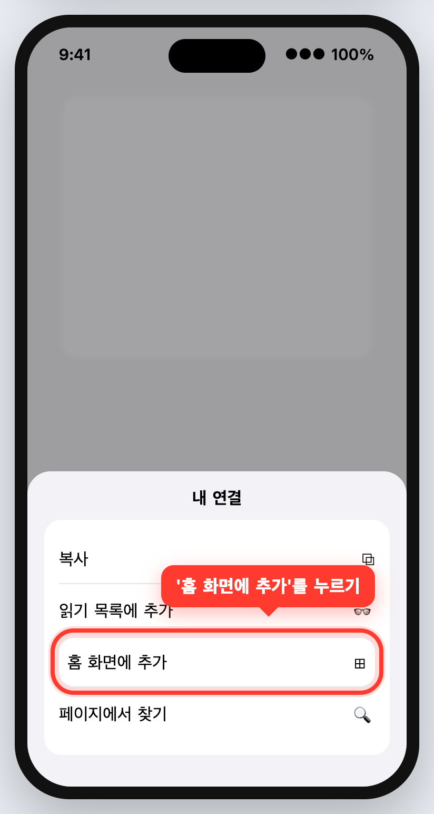
4. 방법 A: Shadowrocket 유료
Shadowrocket 다운로드
- iPhone의 App Store(파란 A 아이콘)를 열기
- 오른쪽 아래 검색을 누르고 Shadowrocket 입력
- 파란 로켓 아이콘 앱을 찾아 가격 버튼을 눌러 구입
- Face ID나 Apple ID 비밀번호로 결제 확인
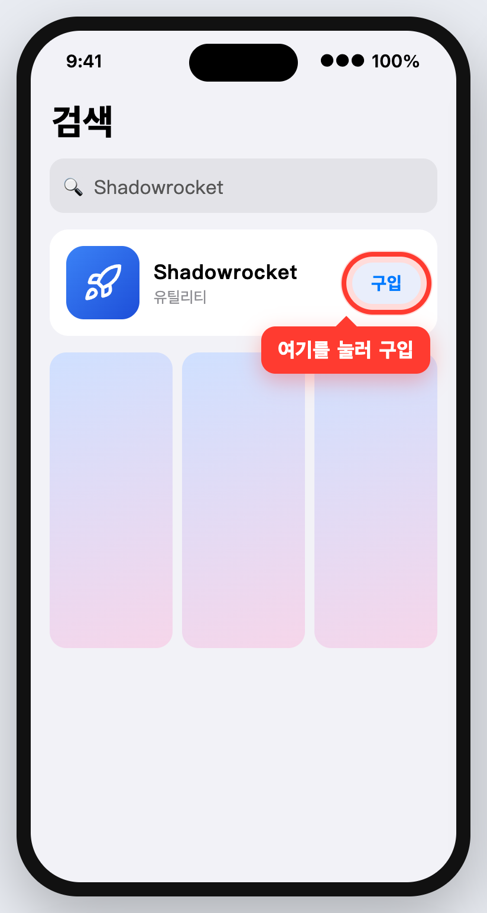
'내 페이지'에서 한 번에 가져오기
- 내 페이지를 열고 Shadowrocket 부분까지 내리기
- 파란 Shadowrocket으로 열기를 누르기
- 'Shadowrocket에서 열까요?'가 뜨면 열기를 누르기
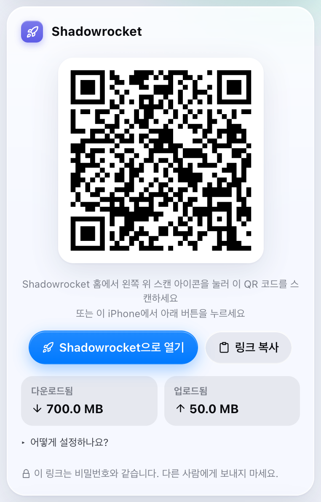
예시・스캔 불가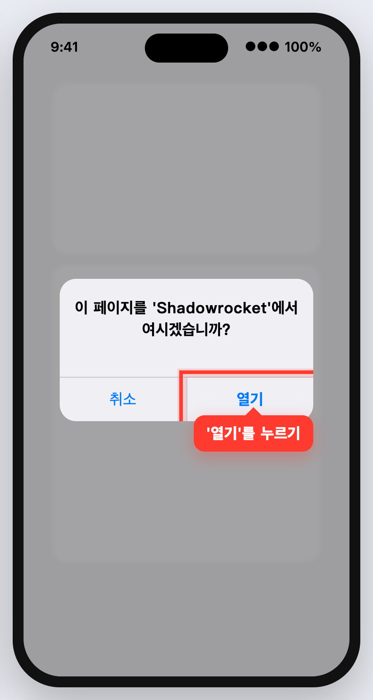
처음 사용: VPN 허용
처음 스위치를 켜면 VPN 구성을 추가할지 물어요. 허용을 누르고 iPhone 암호를 입력하거나 Face ID를 쓰세요.
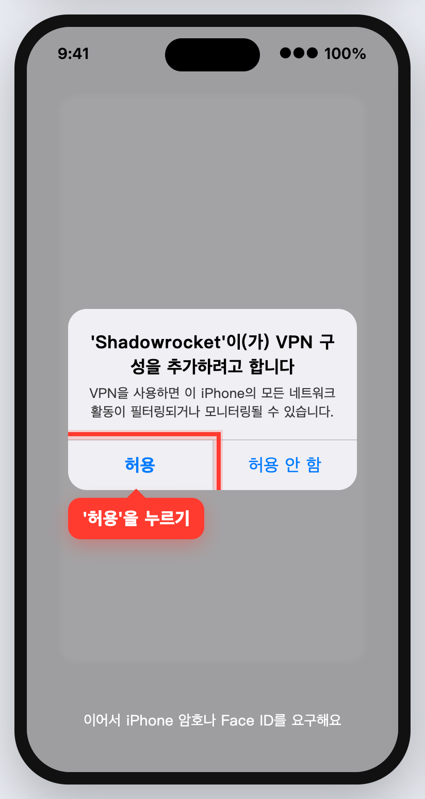
스위치 켜기
- 아래 목록에서 '집의 Mac' 앞에 체크 ✓가 있는지 확인
- '전역 라우팅'은 프록시 선택
- 맨 위 스위치를 켜기(초록색으로 바뀜)
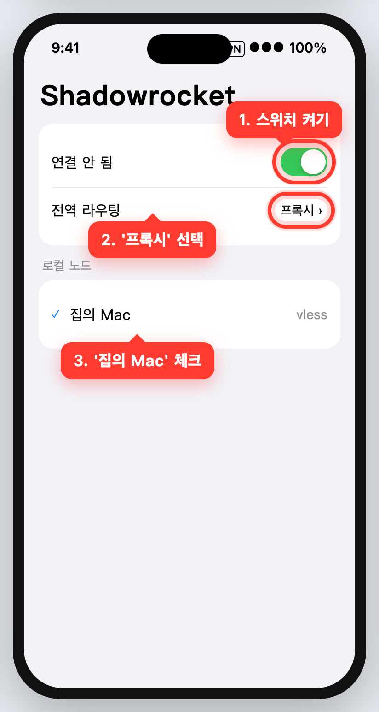
평소에는 어떻게 쓰나요?
- 쓸 때: Shadowrocket을 열고 스위치를 켜기
- 안 쓸 때: 스위치만 끄면 돼요(배터리 절약)
- iPhone 설정 → VPN에서도 켜고 끌 수 있어요
5. 방법 B: Tailscale 무료
Tailscale 다운로드
- App Store를 열고 Tailscale 검색
- 받기(무료)를 누르고 Face ID나 암호로 확인
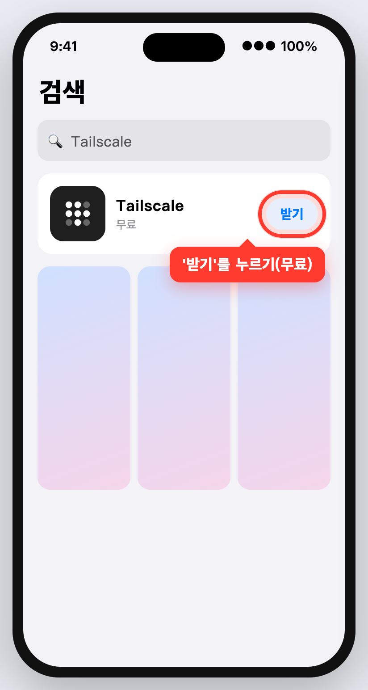
초대 수락 후 로그인
- 관리자가 보낸 초대 링크를 열고 'Accept'를 누르기
- Tailscale 앱을 열고 로그인을 누르기
- 평소 쓰는 계정(Google 또는 Apple)으로 로그인
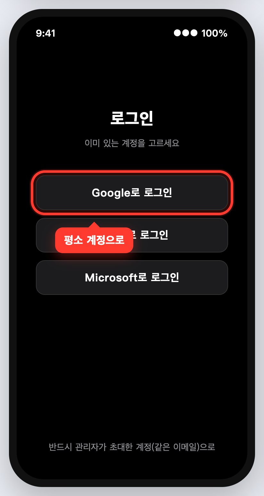
VPN 허용
Shadowrocket과 마찬가지로 처음에는 VPN 구성(이름은 Tailscale)을 추가할지 물어요. 허용을 누르고 iPhone 암호나 Face ID로 확인하세요.
연결을 켜고 '집 컴퓨터' 선택
- 맨 위 스위치를 켜기(초록색으로 바뀜)
- Exit Node를 누르기
- 집 컴퓨터 선택(실제 이름은 관리자에게 물어보세요)
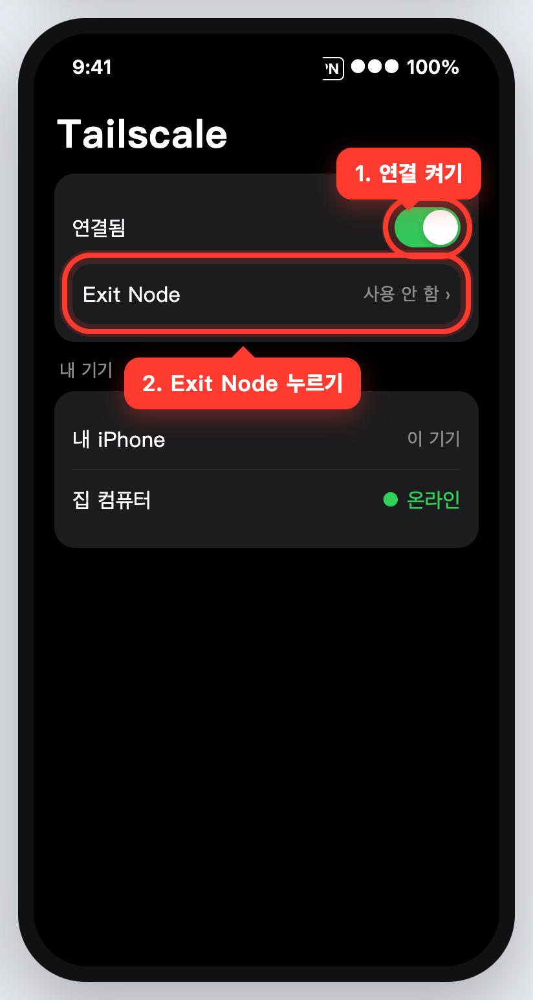
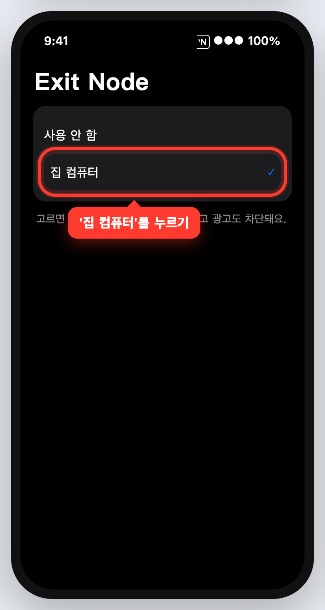
제대로 됐는지 확인
방법 A와 같아요: Safari로 api.ipify.org를 열어 관리자가 말한 숫자와 같으면 성공이에요.
6. '내 클라우드'에 사진과 파일 저장
관리자가 클라우드 드라이브를 열어 줬다면 내 페이지에 '내 클라우드'가 있어요. 사진, 동영상, 문서를 집 드라이브에 저장할 수 있어 휴대폰을 바꿔도 잃어버리지 않아요.
두 가지 폴더
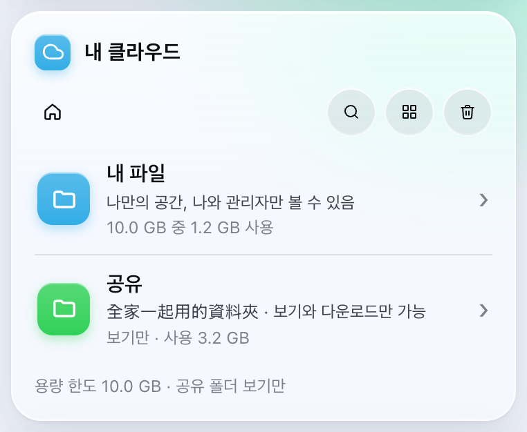
- 내 파일: 나만의 공간으로 나와 관리자만 볼 수 있어요. 사용량과 한도가 표시돼요.
- 공유: 가족 모두가 쓰는 폴더예요. 여기에 넣을 수 있는지는 관리자가 정해요.
사진이나 동영상 업로드
- 내 파일을 눌러 들어가기
- 파란 업로드를 누르기
- 사진 보관함을 고르고 올릴 사진이나 동영상을 체크한 뒤 추가를 누르기
- 진행 막대가 끝나면 '업로드됨'이 나와요. 막대 아래에 속도와 남은 시간이 표시돼요
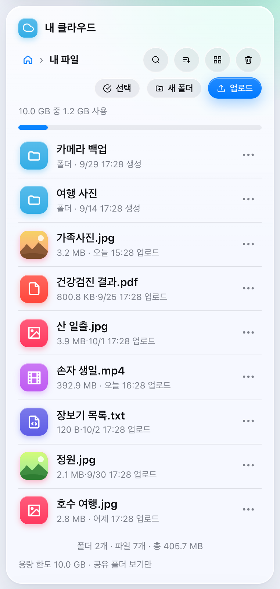
위쪽 작은 버튼들은 무엇을 하나요
- 🔍 검색: 파일 이름 일부(예: '생일')를 입력하면 모든 폴더에서 찾아 줘요
- ↕️ 정렬: 이름, 업로드 시간, 수정 시간, 크기, 종류로 정렬해요. 최근 업로드를 보려면 '업로드 시간'
- ▦ 보기 방식 전환: '목록'과 '앨범'을 바꿔요. 앨범은 휴대폰 사진 앱처럼 격자로 보여 줘요
- 🗑 휴지통: 지운 것은 먼저 여기에 들어가요(6단계 참고)
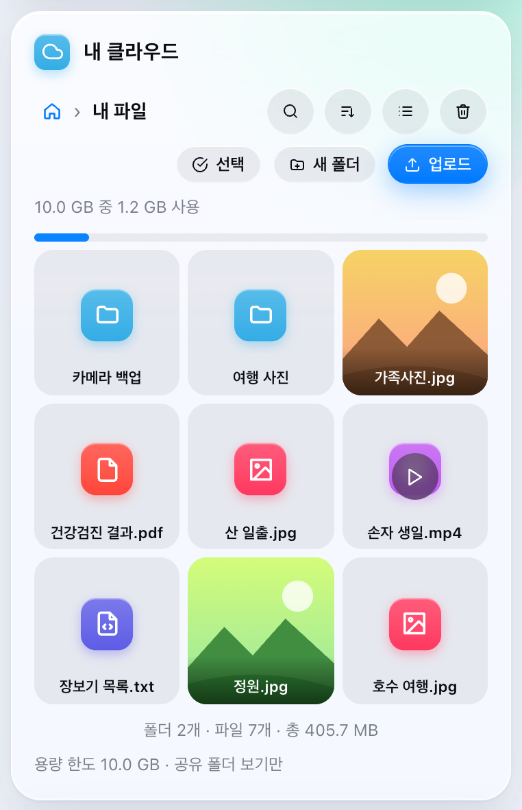
누르면 바로 보기
다운로드 없이 누르면 휴대폰에서 열려요:
- 사진, 동영상, 음악: 바로 보고 재생해요. 좌우로 밀면 이전·다음으로 넘어가요
- PDF, Word, Excel, PowerPoint, Pages, Keynote: 첫 페이지를 보여 줘요. PDF는 PDF 열기로 전체를, Word는 텍스트 보기로 전문을 볼 수 있어요
- 텍스트 파일(.txt), 표(.csv): 내용을 바로 보여 주고 CSV는 표로 정리돼요
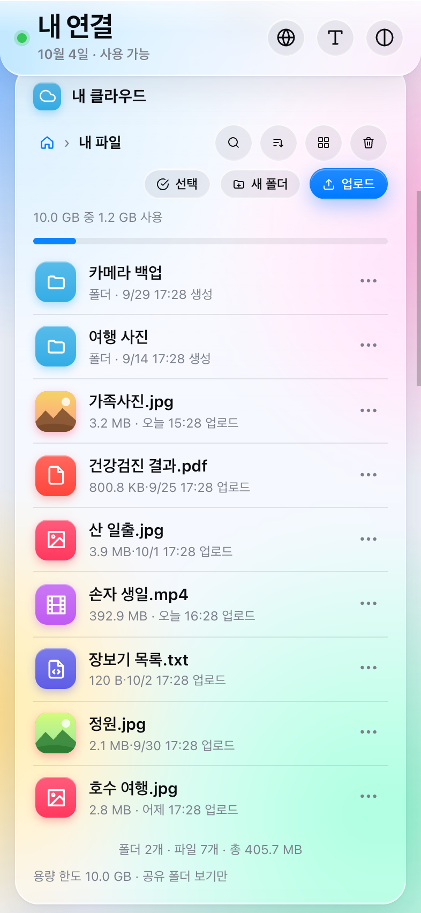
⋯를 누르면 더 많은 기능
파일마다 오른쪽에 ⋯가 있어요. 누르면:

- 다운로드: 휴대폰에 저장. 폴더라면 ZIP 다운로드로 바뀌어 폴더 전체를 한 번에 받아요
- 자세히: 파일 크기, 업로드 시간, 사진 화소, 동영상 길이 보기
- 공유: 친구에게 보낼 링크 만들기(아래 '다른 사람과 공유' 참고)
- 이름 바꾸기, 이동(다른 폴더로), 삭제

여러 파일을 한 번에 정리
- 선택을 누르기
- 정리할 파일을 누르면 앞에 파란 체크 ✓가 생겨요(모두 선택으로 한 번에 체크)
- 이동으로 다른 폴더로 옮기거나 삭제
- 끝나면 완료
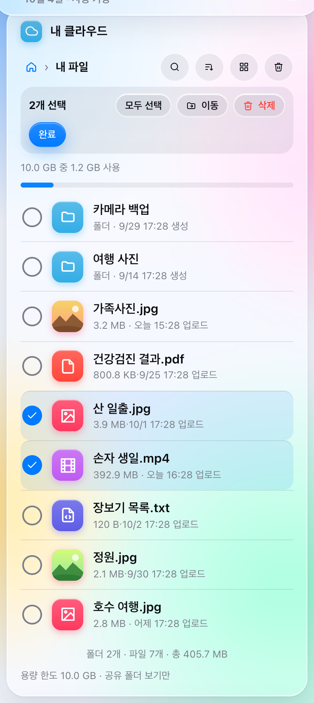
이동하면 폴더 목록이 떠요. 폴더를 눌러 들어가 원하는 곳에서 여기로 이동을 누르세요.
실수로 지웠나요? 휴지통에서 되살리기
지운 파일은 바로 사라지지 않고 휴지통에 30일 동안 있다가 자동으로 지워져요.
- 위쪽 줄의 🗑 휴지통을 누르기
- 되살릴 파일에서 복원을 누르면 원래 폴더로 돌아가요
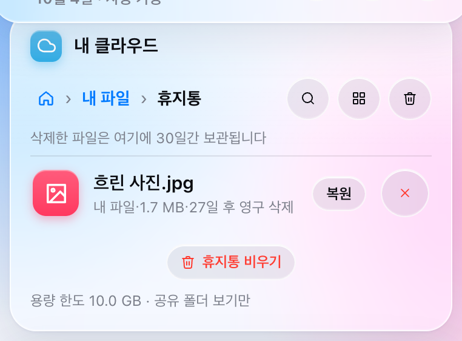
다른 사람과 공유(상대는 앱 필요 없음)
- 파일이나 폴더에서 ⋯ → 공유
- 유효 기간 선택(1일, 7일, 30일, 영구)
- 최대 다운로드 횟수를 정하거나 비밀번호를 걸 수 있어요
- 링크 만들기를 누르면 자동으로 복사돼요. LINE에 붙여넣어 보내면 끝
7. iPhone 사진 매일 자동 백업
iPhone 기본 '단축어' 앱으로 매일 밤 그날 찍은 사진을 클라우드 '카메라 백업' 폴더에 자동 저장해요. 다른 앱도 VPN도 필요 없고 인터넷만 되면 백업돼요.
'단축어' 앱에서 자동화 추가
- 단축어 앱 열기(안 보이면 홈 화면을 아래로 쓸어 '단축어' 검색)
- 아래 자동화를 누르고 오른쪽 위 ＋
- 특정 시간을 골라 매일 밤 11:00로 정하고 즉시 실행을 고른 뒤 다음
동작 세 개 추가
- 동작 추가를 누르고 사진 찾기를 검색해 추가. '필터 추가'를 눌러 추가된 날짜・오늘로 설정
- 이어서 각 항목 반복을 검색해 추가
- '반복' 안에 URL의 콘텐츠 가져오기를 추가:
- URL: 방금 복사한 주소를 붙여넣기
- '더 보기'를 누르고 방법을 POST로
- 요청 본문은 파일, 파일은 반복 항목
- 헤더에서 '새로운 헤더 추가'를 두 번:
첫째: 이름X-Requested-With, 값portal
둘째: 이름X-Filename, 값은 반복 항목의 이름, 뒤에.heic입력
('설정 → 카메라 → 포맷'이 '높은 호환성'이면.jpg로 입력)
한 번 실행해 보기
오른쪽 아래 ▶︎로 실행해 보세요. 처음엔 사진 접근을 허용할지 물으니 허용을 누르세요. 끝나면 '내 클라우드 → 내 파일 → 카메라 백업'에 오늘 사진이 있을 거예요.
8. 그 밖의 유용한 기능
큰 글씨(어르신용)
내 페이지 오른쪽 위 T를 누르면 글씨와 버튼이 모두 커져요. 이 휴대폰이 기억해서 다음에도 큰 글씨예요. T를 다시 누르면 원래 크기로 돌아와요.
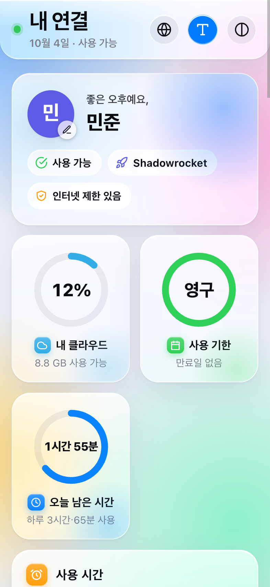
오늘 남은 시간
관리자가 하루 사용 시간을 정했다면 페이지에 파란 원 '오늘 남은 시간'이 나와 남은 분이 보여요.
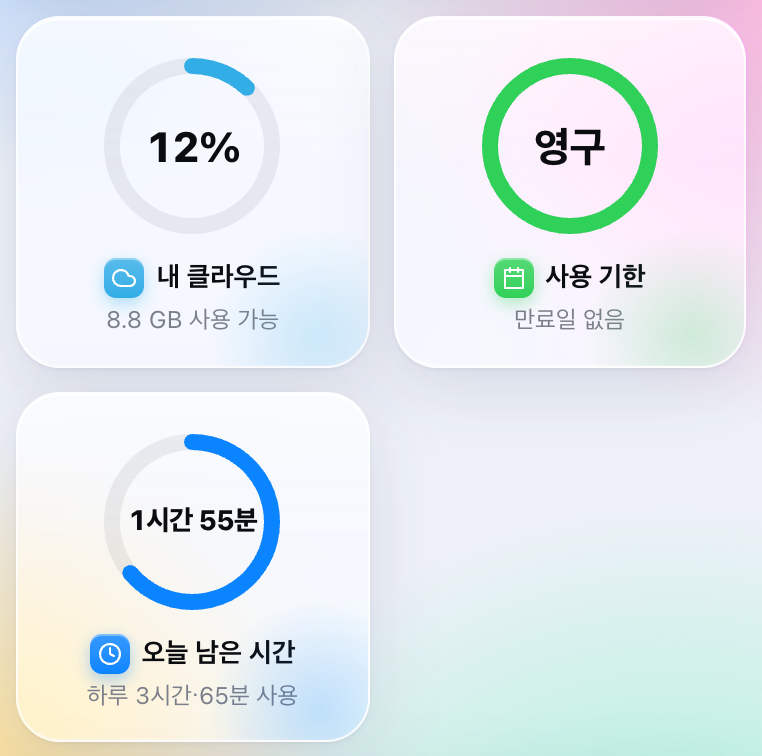
- 실제로 인터넷을 쓸 때만 시간이 줄어요. 켜 두기만 하면 줄지 않아요
- 시간을 다 쓰면 그날은 연결이 안 되고 자정에 자동으로 복구돼요
- 부족하면 메시지로 관리자에게 늘려 달라고 하세요
관리자에게 메시지
사용 기한 연장, 클라우드 용량 추가, 하루 시간 추가가 필요하거나 문제가 있으면 페이지에서 바로 메시지를 보내세요:
- '관리자에게 메시지'에서 항목 선택(예: 클라우드 용량 늘리기)
- 덧붙일 말은 아래 칸에 쓰기(선택)
- 보내기를 누르기
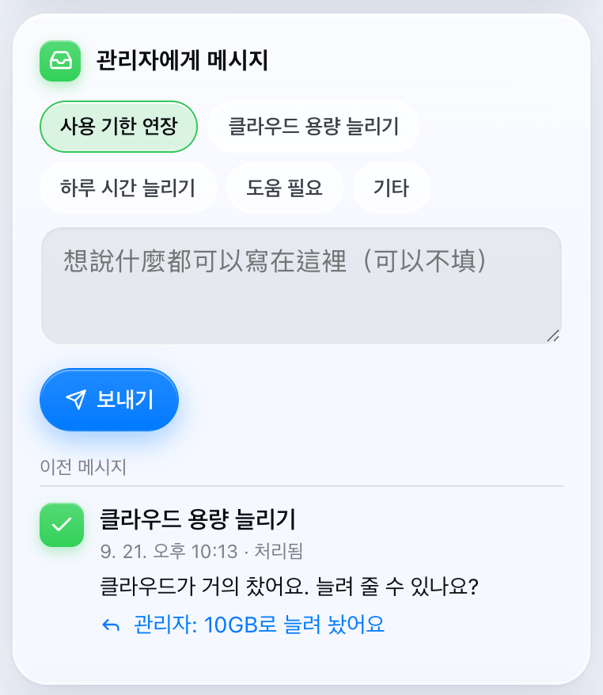
관리자 휴대폰에 바로 알림이 가요. 답장은 '이전 메시지' 아래에 나오고, 초록 체크는 처리됐다는 뜻이에요.
속도 측정
느리다고 느껴지면 페이지 맨 아래 '연결 확인'에서 속도 측정 옆 시작을 누르세요. 약 10초 뒤 다운로드와 업로드 속도가 나와요.
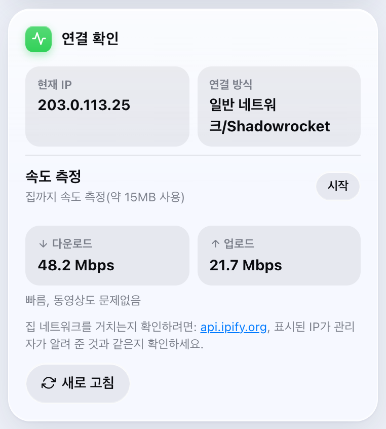
- 20Mbps 이상: 빠름, 동영상도 문제없음
- 5~20Mbps: 일반 사용에 문제없음
- 5Mbps 미만: 느린 편, 장소나 Wi-Fi를 바꿔 보세요
9. 집 Mac 상태 보기 제어판 권한이 있는 사람
집 네트워크와 클라우드는 Mac 한 대로 돌아가요. 관리자가 '제어판'을 열어 줬다면 이 Mac이 얼마나 바쁜지, 뜨겁지 않은지, 배터리는 어떤지 볼 수 있어요. 이 페이지는 보기만 하고 설정은 바뀌지 않으니 안심하세요.
'Mac' 페이지 열기
- 제어판 열기(먼저 Tailscale 켜기)
- 아래 설정을 누르고 위의 Mac을 누르기
또는 제어판 홈에서 CPU나 메모리 원을 눌러도 이 페이지로 와요.
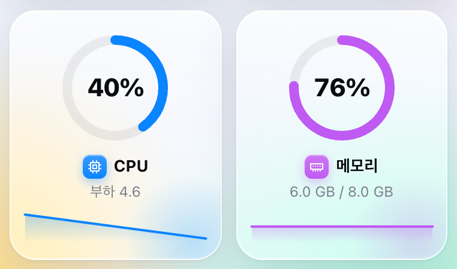
맨 위: 지금 상태를 한눈에
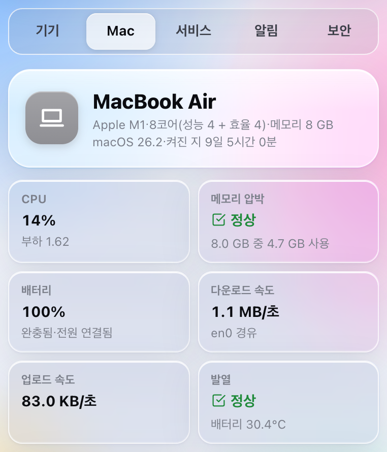
- CPU: 컴퓨터가 얼마나 바쁜지. 평소 20% 이하, 가끔 올라가도 괜찮아요
- 메모리 압박: 초록 '정상'이면 좋아요. 주황 '높음'은 앱을 너무 많이 열어 느려진다는 뜻이에요
- 다운로드/업로드 속도: 집 Mac이 지금 주고받는 데이터 양
- 발열: 초록 '정상'. 빨간 '과열로 속도 저하'는 너무 뜨거워서 스스로 느려진 상태예요
추세 그래프: 지난 24시간
최근 1시간, 6시간, 24시간 중에서 골라요. 그래프를 손가락으로 누르면 그 시각의 숫자가 나오고, 바깥을 누르면 사라져요.
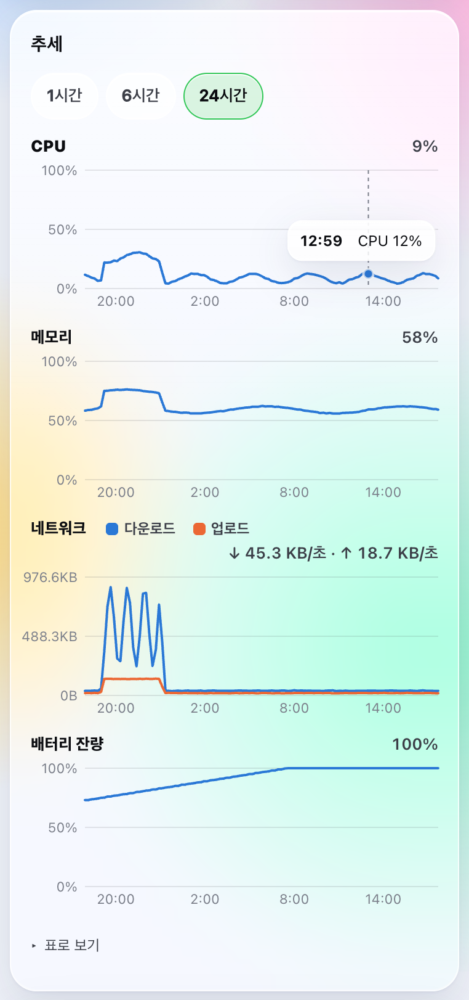
그래프가 불편하면 맨 아래 표로 보기로 시각별 숫자를 표로 볼 수 있어요.
배터리
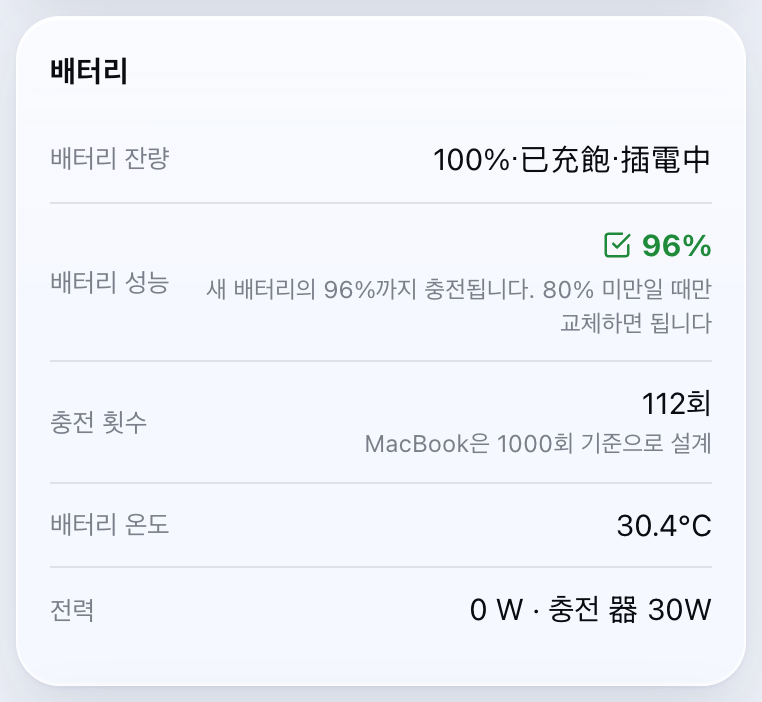
- 배터리 성능: 새 배터리 대비 몇 %까지 충전되는지. 80% 이상이면 정상이고 80% 미만일 때만 교체를 고려하세요
- 충전 횟수: 배터리를 몇 바퀴 썼는지. MacBook은 1000회 기준이에요
- 배터리 온도: 30도대는 정상, 40도를 넘으면 주황색으로 알려 줘요
메모리: 컴퓨터가 느려지는 이유
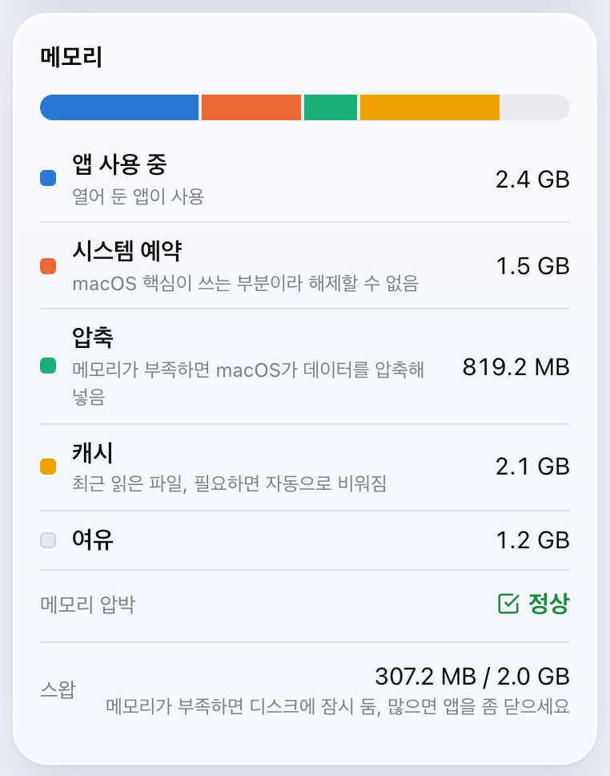
- 막대가 여러 색으로 나뉘고, 각각 옆에 설명과 사용량이 있어요
- 캐시는 걱정 안 해도 돼요. 필요하면 자동으로 비워져요
- 압축과 스왑이 많으면 메모리가 부족해서 느려지고 뜨거워져요
자원을 가장 많이 쓰는 앱
CPU순과 메모리순으로 바꿀 수 있어요. 같은 앱이 여러 개(브라우저 탭 등)면 한 줄로 합쳐 ×개수를 붙여요.
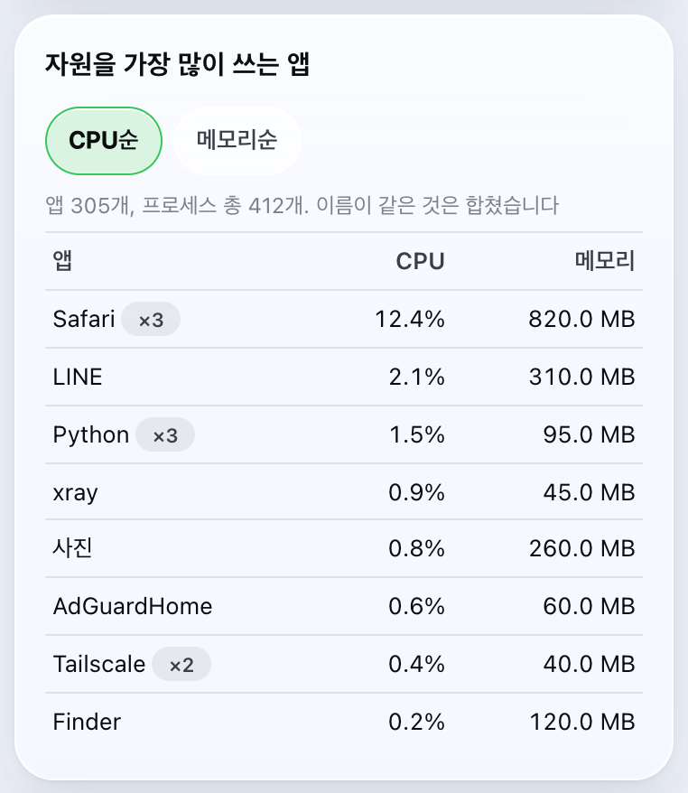
10. 휴대폰으로 Windows PC 조작 관리자
집에 Windows PC가 있으면 Mac처럼 휴대폰으로 조작할 수 있어요: 사용 중인지 보기, 다음 곡, 볼륨 조절, 쓰는 사람에게 알림 띄우기, 잠금, 종료. 이 기능은 관리자(제어판 소유자)만 볼 수 있어요.
먼저 Windows에 Tailscale 설치
- Windows에서 tailscale.com/download에서 받아 설치
- 휴대폰과 같은 계정으로 로그인(중요: 다른 계정이면 연결되지 않아요)
- 오른쪽 아래 Tailscale 아이콘이 연결됨이어야 해요
휴대폰에서 설치 명령 만들기
- 제어판을 열고 아래 원격을 누르기
- 맨 위 ＋ Windows를 누르고 설치 명령 만들기를 누르기
- 명령 복사를 누르고 LINE이나 이메일로 Windows PC에 보내기
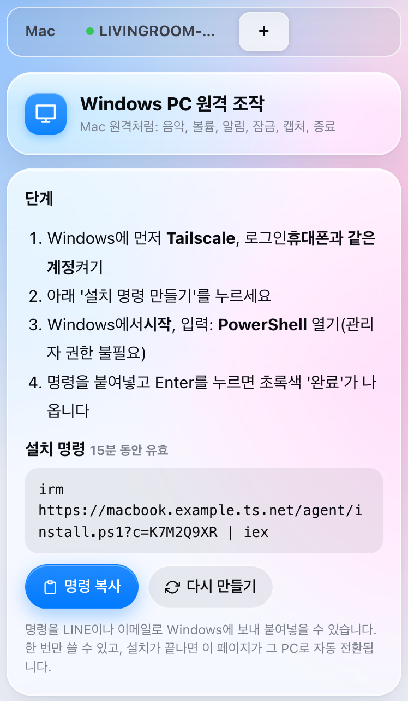
Windows에서 명령 붙여넣기
- 키보드의 ⊞ Windows 키(또는 왼쪽 아래 시작)를 누르고 PowerShell을 입력해 Enter로 열기
- 파란색이나 검은색 창에서 오른쪽 클릭(또는 Ctrl+V)으로 붙여넣고 Enter
- 초록색 '완료!'가 보이면 끝이에요. 창을 닫아도 돼요
상태 보기, 음악 조작
위 버튼으로 Mac과 각 Windows PC를 바꿔요. 이름 옆 초록 점은 켜져 있고 연결된다는 뜻이에요.
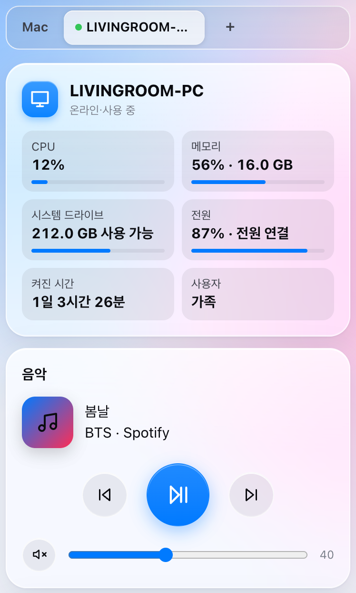
- 온라인・사용 중/유휴/잠김: 지금 누가 쓰고 있는지 알 수 있어요
- 음악: Spotify, 브라우저의 YouTube 등에서 재생 중인 것을 보고 일시 정지, 곡 넘기기, 볼륨 조절을 할 수 있어요
화면과 전원
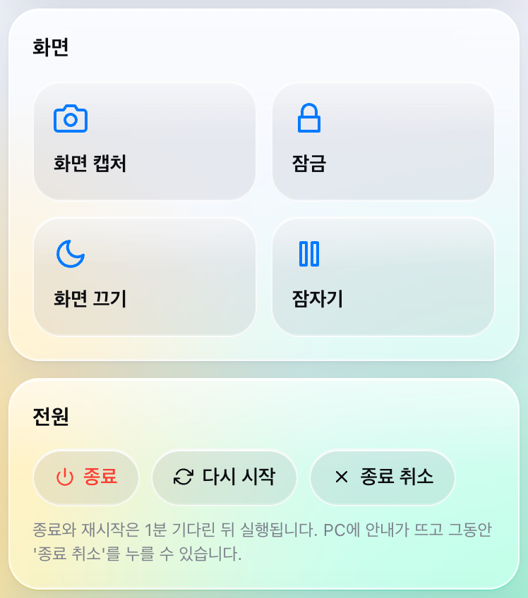
- 화면 캡처: PC의 지금 화면 보기(잠겨 있으면 안 보여요)
- 잠자기, 종료, 다시 시작은 두 번 눌러야 실행돼요(실수 방지)
- 종료와 다시 시작은 1분 기다린 뒤 실행되고 PC에 안내가 떠요. 마음이 바뀌면 종료 취소
더 아래에는 알림 띄우기와 소리 내어 읽기(예: '밥 먹어!'), 클립보드 동기화(휴대폰과 PC 간 글자 주고받기), PC에서 주소 열기가 있어요.
더 안 쓰면: 제거
그 PC 페이지 맨 아래 이 PC 제거(두 번 누르기). PC가 켜져 있으면 프로그램이 스스로 지워지고, 꺼져 있으면 다음에 켜져 연결될 때 지워져요.
11. 관리자에게 문제 보고
페이지가 안 열리거나, 클라우드 업로드가 실패하거나, 인터넷이 안 되는 등 이상한 점이 있으면 내 페이지에서 바로 관리자에게 알려요. 길게 쓸 필요 없이 고르고 스크린샷만 찍으면 돼요.
간단히 채우기
- 어디에 문제가 있나요?: 클라우드 드라이브, 인터넷/연결, 내 페이지… 중에서 고르기
- 얼마나 심각한가요?: 사소함, 약간 영향 있음, 전혀 안 됨
- 무슨 일인지 한 문장으로: 예 '동영상 업로드가 중간에 실패해요'
- 자세한 설명: 선택이지만 쓰면 원인을 더 빨리 찾아요
- 스크린샷: 스크린샷 선택을 눌러 사진에서 최대 3장
- 보고 보내기를 누르면 관리자 휴대폰에 바로 알림이 가요
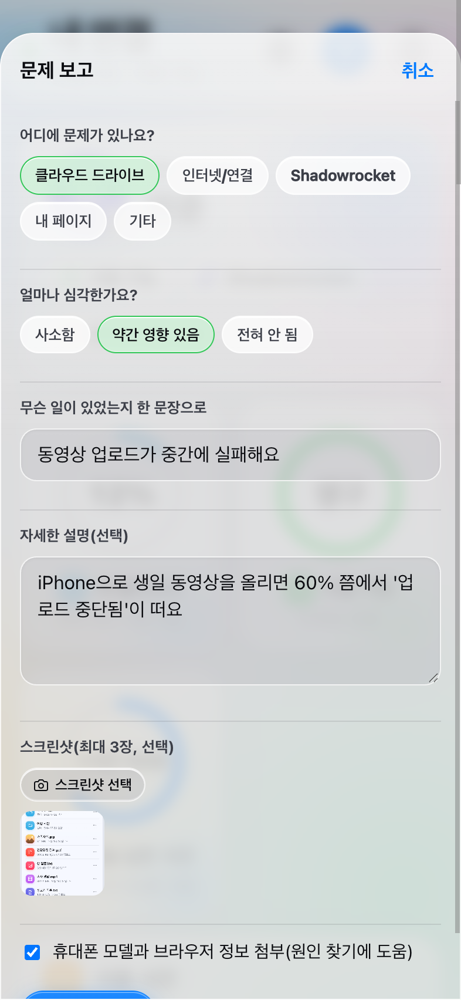
관리자 답장 보기
- 관리자가 답장하면 제목 옆에 빨간 점 🔴이 생겨요
- 오른쪽 라벨에 진행 상황이 보여요: 새 보고 → 처리 중 → 해결됨
- 덧붙이려면 아래 칸에 쓰고 보내기
- '해결됨'인데 아직 문제가 있나요? '아직 문제가 있나요?'를 눌러 알리면 보고가 다시 처리 대기 목록으로 가요
12. 문제가 생기면
Windows 원격: 명령을 붙여넣은 뒤 빨간 글씨로 '설치 실패'
- Windows 오른쪽 아래 Tailscale이 연결됨이고 휴대폰과 같은 계정으로 로그인했는지 확인하세요.
- 명령은 한 번만, 15분 동안 유효해요: 휴대폰에서 다시 만들기를 누르고 새 명령을 다시 붙여넣으세요.
- PowerShell에 붙여넣어야 해요. '명령 프롬프트(cmd)'가 아니에요.
Windows 원격: PC가 계속 '오프라인'이고 버튼이 회색
켰더니 인터넷이 안 돼요
- 먼저 Shadowrocket(또는 Tailscale) 스위치를 껐다가 다시 켜세요.
- 그래도 안 되면 일단 스위치를 끄면 휴대폰이 원래 인터넷으로 돌아와요.
- 문제 보고로 관리자에게 알리세요('전혀 안 됨' 선택): 집 컴퓨터가 꺼졌거나 인터넷이 끊겼을 수 있어요.
내 페이지에 '권한이 없음'이나 빨간 글씨가 나와요
- 허용 시간 아님: 관리자가 쓸 수 있는 시간을 정했어요. 그 시간이 되면 쓸 수 있어요.
- 만료됨: 사용 기한이 끝났어요. 연장할지 관리자에게 물어보세요.
- 사용 안 함: 관리자가 잠시 꺼 두었어요. 관리자에게 물어보세요.
'오늘 시간을 다 썼습니다'라고 나와요
내 페이지에 '페이지를 찾을 수 없음'이나 '주소를 쓸 수 없음'이 나와요
Shadowrocket에서 '집의 Mac' 옆에 빨간 점
일부 앱이나 사이트가 안 열려요
업로드가 실패하고 '용량 한도를 넘었습니다'라고 나와요
사진 자동 백업이 실행되지 않았어요
- 단축어에 '관리자가 사진 자동 백업을 허용하지 않았습니다'가 나오면 관리자에게 제어판에서 켜 달라고 하세요.
- '단축어' 앱 → '자동화'에서 그 자동화가 켜져 있고 '즉시 실행'으로 되어 있는지 확인하세요.
- 직접 ▶︎를 한 번 눌러 보고 오류 메시지가 나오는지 보세요.
- 'forbidden'이 나오면: 두 '헤더'의 이름에 오타가 없는지 확인하세요(대소문자도 같아야 해요).
- '용량 한도를 넘었습니다'가 나오면: 클라우드가 가득 찼어요. 오래된 파일을 지우거나 관리자에게 용량을 늘려 달라고 하세요.
친구가 공유 링크가 안 열린대요
클라우드 사진이 회색이고 미리보기가 없어요
제어판에서 'Mac' 페이지를 못 찾겠어요
새 휴대폰으로 바꾸면?
Shadowrocket과 Tailscale을 동시에 켤 수 있나요?
13. 안전 수칙
- 전용 주소를 다른 사람에게 보내거나 단톡방에 올리지 마세요
- Shadowrocket QR 코드 스크린샷을 공유하지 마세요
- 실수로 보냈다면 바로 관리자에게 알리세요. 새것으로 바꿔 주면 이전 것은 바로 무효가 돼요
- '사진 자동 백업' 업로드 주소를 다른 사람에게 주지 마세요. 가진 사람은 내 클라우드에 파일을 올릴 수 있어요
- 공유 링크를 보내면 링크를 가진 누구나 다운로드할 수 있어요. 중요한 파일은 비밀번호와 기한을 꼭 정하세요
- 관리자라며 비밀번호나 인증 코드를 달라고 하면 먼저 본인에게 전화해서 확인하세요